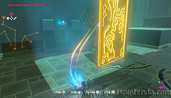

Puedes acceder a este santuario desde que llegas en la región de la torre del lago. Se encuentra muy cerca de la Posta de Farone, solo debes escalar una pequeña montaña a su lado para encontrarlo.
Una vez dentro usa el módulo imán para abrir la gran puerta de metal que se encuentra cerrada frente a ti.

En la siguiente sala ve hacia el lado izquierdo según entras y encuentras otra gran puerta de metal que también podrás abrir, sin embargo, verás que al lado tiene unos bloques agrietados que puedes destruir con una bomba. Hazlo y podrás pasar para encontrar un cofre con un Arco real.
Al romper los bloques agrietados, podrás coger la puerta de metal y levantarla como si fuera una gran plataforma. Así podrás usarla para crear rampas y subir a las zonas elevadas de la sala.
Hay un par de miniguardianes en la parte baja de la sala, lo mejor es que los destruyas antes de mover la puerta de metal, así no te molestarán.
Una vez que has subido a una zona elevada, vuelve a elevar la puerta de metal y úsala para formar otra plataforma que te permita alcanzar otra. Así puedes llegar hasta la torre formada por bloques que sujetan un cofre en la parte superior. Baja el cofre con el imán y ábrelo para conseguir un trozo de ópalo.
En la parte trasera de esta plataforma donde estaba el cofre puedes encontrar otro bloque si usas el imán. Al sacarlo de la pared encontrarás un hueco con un cofre escondido. Dentro de él encuentras una rupia dorada.
Por último, forma otra camino usando la puerta de metal para alcanzar el altar del santuario (del mismo modo que lo hiciste para alcanzar el segundo cofre) y así obtener un símbolo de valía.